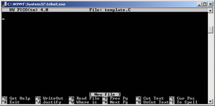

How to use Pico
to edit a file
In order to type your C++ or any other programs or text,
you will use an text editor. There are several editors that one can use
on a UNIX machine. The most common ones are vi, pico, emacs, and nedit.
Perhaps the most powerful of these four is vi. One needs some practice
to become comfortable with vi. For now, we will learn pico. Pico is simpler
to learn than vi and it does most of the basic things we may need in an
editor. There is an excellent reference for pico at: http://www.usd.edu/trio/tut/pico/.
Suppose, you want to edit a file that is called template.C.
In order to open that file, you will type: % pico template.C
This file could be a new file or an existing file. When
the file is a new file, you will get a blank screen and when it is an existing
file, the contents of that file will be displayed. For now, we assume that
is a new file. Upon execution of the above command, you will get
a screen similar to the one shown below. 
The bottom two lines of the screen contain some of the
more common commands available. Practice typing a few lines, then save
your work by pressing ^X (which means <Ctrl-X>).The
symbol ^ means use the Ctrl key. You'll need to confirm the save by pressing
'Y'; typing 'N' will discard changes made to the file.
Table (1) shows some of the commands available in Pico
(alternative keyboard commands are in parentheses). ^G is for help,
then ^v is to go to the second page.
Table (2) shows some more editing commands available
in Pico.
Note: If you wish to go to a particular
line number from the command prompt, use:
% pico +LineNumber FileName |
Table (1) - Moving around in Pico
| Command |
Short Description |
| ^F (right arrow) |
move forward a character |
| ^B (left arrow) |
Move back a character |
| ^P (up arrow) |
Move up one line |
| ^N (down arrow) |
move down one line |
| ^A |
move to the beginning of the current line |
| ^E |
move to the end of the current line |
| ^V (F8) |
move forward one screen of text |
| ^Y (F7) |
move backward one screen of text |
Table (2) - Editing in Pico
| Command |
Short description |
| ^^ |
mark position as beginning of select text |
| ^K (F9) |
selected text ends on the left side of the
current cursor position beginning must be marked already cut selected text
(inversed text) if nothing selected this will cut the current line of text |
| ^U (F10) |
uncut or paste last cut text inserting at
current cursor position |
| ^J |
justify the current paragraph |
| ^I (Tab) |
insert a tab at current position |
| ^T |
spelling checker |
| ^C |
print current cursor position (current line
number) |
| ^W (F6) |
search for text - neglecting case |
| ^L |
redraw screen |
| ^G (F1) |
display the help text from within Pico |
|